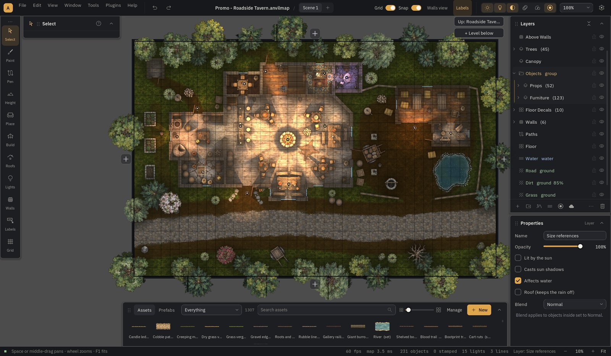

Ink Hammer user guide
Build battle maps for tabletop games: paint the ground, draw buildings, dress them with art, light them, and export for print or any virtual tabletop.
Start here
Step 1Install and first launchUnzip, run Ink Hammer.exe, and find your way around the start screen.
Step 2Your first mapA tavern from blank map to finished export, one tool at a time.
Step 3The main windowClick around a screenshot of the editor to learn every panel.
Look things up
The toolsPaint, Pen, Height, Place, Build, Roofs, Lights, Walls, Labels and Grid.
LayersLayer kinds, order, and why order decides what a lamp lights.
Cliffs, dunes and hillsEvery cliff look, breakup on the ledges, rolling dunes, sinking props into the ground.
Walls and buildingsEvery wall style, walls off the ground, flipping, roof blends.
Water and waterfallsEvery water look, rivers that flow, the sea, waterfalls and spills.
Light and shadowDaylight, the sun, lamps, shadows and the speed switches.
Exporting for playGridless, gridded, Roll20 and Universal VTT files.
Connect ClaudeLet Claude draft a map for you to refine.
What's newWhat changed in each version.
TroubleshootingNo shadows, slow redraws, lost work, connection errors.
How Ink Hammer thinks
- Everything is a layer. Ground, water, walls, furniture, roofs, lights and mist each sit on a layer, and the order of layers is the order things are drawn. A lamp lights its own layer and everything under it.
- Buildings are made from rooms. Draw the rooms with the Build tool and the walls, floors and doors are made for you.
- Heights are real. Props, walls, roofs and terrain have heights in feet, so the sun and lamps cast shadows the right length.
- Nothing is lost. Every edit can be undone with Ctrl+Z, and your map is autosaved every 2 minutes.
Tip
Press / anywhere in this guide to search it.